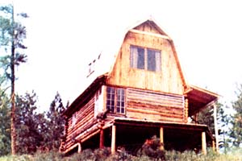
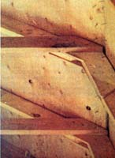
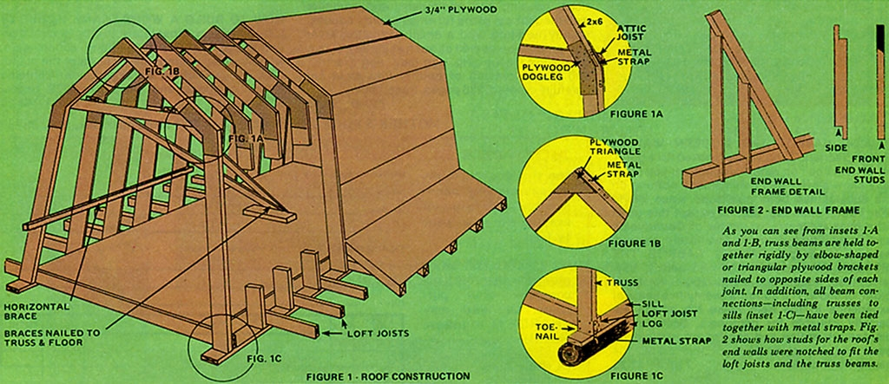

A couple years ago, when I was building my 15' x 20' log cabin in far northern Washington, I decided to top the building with a gambrel (rather than a more conventional gable or A-frame) roof. Not only would the gambrel's steep side pitch give the cabin ample upstairs room, I reasoned, but the double-sloping design would make more efficient use of roofing materials than a giant A frame ever could. And besides that, I like the looks of gambrel roofs.
Some background reading soon taught me, however, that a conventional barn-sized gambrel is a nightmare of purlin beams, ridge beams and dovetail joints. What I had in mind, in other words, was a fine project for an army of engineers, but one that was probably beyond the capabilities of two non-professionals (such as Jim-my building partner-and myself).
Rather than give up, however, I decided to try to simplify the construction of the gambrel I wanted. What I ultimately devised was an easy-to-work-with system of lightweight trusses that could be built flat on the ground, then erected atop the cabin and covered with exterior plywood to give the barn-like roof shown in the accompanying photos. Here, briefly, is how the trusses (and the gambrel roof formed from them) went together:
I'd planned to start by making a dozen or so gambrel-shaped frames or trusses out of 2 x 6 lumber. Initially, though, I had no idea how I could connect the pieces of each truss together so that they'd be held rigidly in the proper configuration.
Then I remembered reading about a system of plywood straps that someone had used in building a geodesic dome. I say "straps" but, actually, they were nothing more than wooden brackets nailed to the sides of two connecting beams to hold them (the beams) together. These plywood brackets were just what Jim and I needed to give our roofing trusses adequate rigidity.
Next we sat down and made scale drawings of several gambrel roof designs, each one employing a different combination of side slopes. In the end, we settled on a roof plan that looked good, made efficient use of materials, and allowed for porch and eave overhangs.
At this point, we measured and cut our truss lumber. First, we made a full-size layout of our gambrel on smooth, level ground and drove stakes into the earth to mark the locations of the four rafters in each truss. Then we laid four 2 x 6 beams out flat in their proper positions and-using a string line-marked the correct lengths and angles to cut them. Next, we sawed the pieces of the first truss to length, set them down between the stakes again, and (after carefully checking their fit) used these original 2 x 6's as patterns with which to mark and cut the rafters for the remaining trusses.
After all the rafters had been cut, we made our plywood brackets (which, because of their shapes, we dubbed "triangles" and "doglegs" (see Figs. 1-A and 1-B). Here, all we did was [1] trace the outlines of the truss joints onto pieces of cardboard, [2] cut templates from the cardboard with scissors, and [3] use the templates as patterns for sawing the brackets out of half-inch plywood.
To assure uniformity, we assembled all our roof trusses on the ground between stakes. The doglegs and triangles were attached with 8-penny nails, and (as you can see from Figs. 1-A and 1-B) all joints were also tied together with strap metal, the kind with which bundles of lumber are bound. (You can obtain this metal free at most any lumberyard. We cut ours into 8" to 12" lengths and used a punch, mallet and vice-grip pliers to make nailing holes through each piece.)
After binding the rafter segments together with doglegs, triangles and metal straps, we finished each truss by nailing a short length of 2 x 6 between its dogleg joints to act as a stiffener (and to serve, later, as an attic joist).
When we were through prefabbing the gambrel frames, we stacked all the trusses flat on a level surface with spacer blocks placed between them.
The procedure we used to erect our semi-triangular frames on top of the cabin can be summarized as follows: First, we'd lay one flat across the joists with its "feet" butted against one of the joists, then we would [1] tilt it partway up, [2] nail a pair of two-by-fours to the truss's short horizontal crosspiece, [3] push the structure upright, and [4] nail the two-by-fours to the loft floor to act as temporary braces. (Note: We took great pains to ensure that the first truss was absolutely plumb at this point, since we intended to align succeeding trusses relative to it.) Afterwards, we nailed the frames' feet to the loft joist and bound them to the supporting sills with metal straps (as depicted in Fig. 1-C).
As successive trusses were erected, we tacked them together with horizontal braces, (to see in more detail, view PDF), to hold them in position. (These braces were removed after the roofing plywood was nailed in place.)
The last couple of frames had to be hoisted into position from the ground, since there was no room to lay them atop the loft before raising them. This, however, was merely a matter of [A] leaning an upside-down frame against the cabin, [B] supporting the frame's peak a few feet off the ground on a stepladder, and then [C] pulling the truss into place by means of a rope and pulley fastened around the crosspiece (attic joist) of an already-standing truss.
We used 3/4" exterior plywood for roofing. (Be sure, though, to check the snow loads for your area and learn what's recommended before you decide on the thickness of lumber to use for your gambrel roof.)
One trick that saved us some work while putting the plywood down-and that might come in handy the next time you work with plywood siding or roofing-was to drive a nail into each truss beam at the exact point where the bottom edge of the lowermost sheet of plywood was to rest. This done, we were able to set the sheet of lumber on the spikes and have both hands free while nailing the piece in place. (The time to make last-minute alterations of truss alignment, by the way, is BEFORE you apply the roofing ... AFTER is too late.) We used 10-penny screwshank nails to positively anchor the heavy plywood where we wanted it.
At this point, your finished roof can be covered with most any kind of shingle, and cracks can be made weathertight with flashing.
We finished our cabin's second-story gambrel roof by enclosing its ends. And we cut the studs for these end walls by measuring each 2 x 4 to fit the sloping roof, making 1-1/2"deep cuts on opposite sides of the studs 6" from either end, and chiseling out the resulting notches. (The uppermost notch must, of course, be cut to fit the angle of the roof. (To see in more detail, view PDF.)
Now that my gambrel roof is up and finished all I can say is that it meets, and/or exceeds, all of my original expectations. It's good-looking, functional (I have an exceptionally spacious sleeping loft now) and it didn't dent my pocketbook too badly, either. Even at today's inflated lumber prices, I doubt if it'd cost more than $400 to build an exact replica of the roof I constructed two years ago (1975).
And think what that $400 can be made into. A roof like the one atop my cabin could easily be used by itself (without any understructure) as a chickenhouse, a child's playhouse, a shed, or-if covered with clear plastic-a greenhouse. (For extra headroom, the ceiling joists could be omitted.)
Here's to gambrel roofs, long may they stand!
|
 |
 |
 |